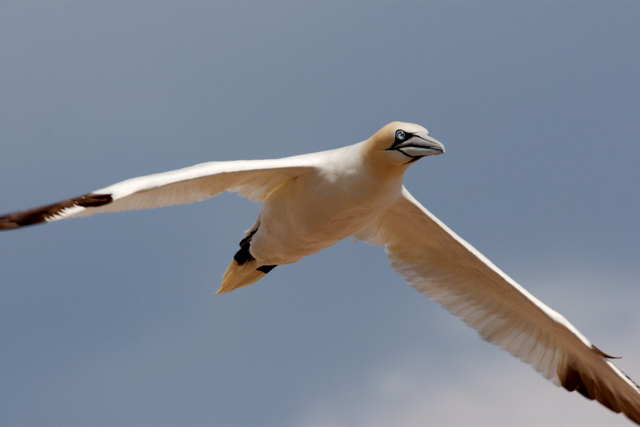
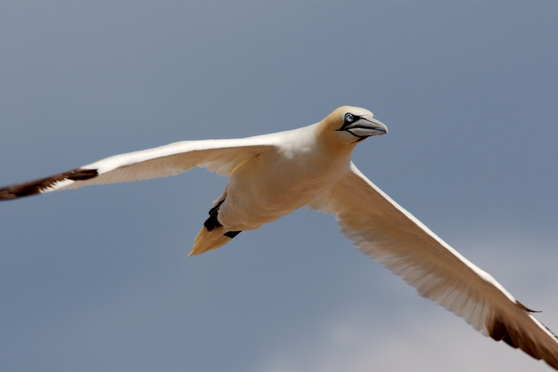

CV
See also my research profile on
 GitHub
GitHub
 ORCID
ORCID
 Google scholar
Google scholar
 Publons
Publons
Biography
- Since 2015 Lecturer, University of Aberdeen, Aberdeen, UK
- 2013-2015 Marie Curie Research fellow, University of Aberdeen, Aberdeen, UK
- 2010-2012 FRQNT posdoctoral fellow, University of California - Los Angeles, Los Angeles, California, USA
- 2010 PhD, Université de Sherbrooke, Sherbrooke, Québec, Canada. “Reproductive strategies of female bighorn sheep (Ovis canadensis)”
- 2006 MSc, Université du Québec à Montréal, (UQAM), Montreal, Quebec, Canada. “Behavioural syndrome in a wild population of Eastern chipmunks (Tamias striatus)”
- 2003 Master in Biology, CREPUQ exchange University of Nancy, France and UQAM, Montreal, Quebec, Canada
- 2002 License in Biology, University of Nancy, Nancy, France
- 2000-2001 Preparatory class for veterinary studies, Lycée Henri Poincaré, Nancy, France
- 1999 French Bachelor in Sciences, Lycée Poncelet, Saint-Avold, France
Research grants and fellowships
- 2017-2021 NSF-LTREB (Long term research in environmental biology) renewal, National Science Foundation, USA. “LTREB: Evolutionary Dynamics in a Rapidly Changing Environment”
- 2013-2015 Marie-Curie International Incoming Fellowship, EU community. “Integrating the ecological and evolutionary consequences of phenological change in a wild mammal system”
- 2011-2016 NSF-LTREB (Long term research in environmental biology), National Science Foundation, USA. “LTREB: Evolutionary Dynamics in a Rapidly Changing Environment”
- 2010-2012 FQRNT postdoctoral Fellowship, Fond Québécois de Recherche sur la Nature et les Technologies, Qc, Canada
- 2008-2010 Alexander Graham Bell Canada PhD Scholarship (CGS), Natural Sciences and Engineering Research Council of Canada (NSERC)
- 2008 MELS Scholarship, Ministère de l’éducation, des loisirs et du sport du Québec
- 2007-2009 ACA Challenge Grants in Biodiversity, Alberta Conservation Association (ACA)
- 2007-2008 FQRNT PhD excellence Scholarship, Fond Québécois de Recherche sur la Nature et les Technologies, Qc, Canada
- 2007 MELS Scholarship, Ministère de l’éducation, des loisirs et du sport du Québec
- 2006-2007 Université de Sherbrooke Scholarship, Université de Sherbrooke Foundation
- 2004-2005 FARE Scholarship, UQAM Foundation 2003-2004
- 2003-2004 Hydro-Québec Scholarship, UQAM Foundation and Hydro-Québec
Teaching experience
Course Coordinator
| Course |
Years |
| BI3809 - Life history evolution |
Since 2015 |
| EK5003 - Introduction to ecological field research in Northern Scotland |
Since 2015 |
| EK5008 - Ecological Field Research Methods |
2014 |
Lecturer
University of Aberdeen, Scotland, UK
| Course |
Years |
| BI3809 - Life history evolution |
Since 2015 |
| EK5003 - Introduction to ecological field research in Northern Scotland |
Since 2015 |
| ZO4539 - Advanced behavioural ecology |
Since 2014 |
| behavioural ecology |
Since 2016 |
| Bayesian stats |
Since 2015 |
| Marine Mammalogy |
Since 2016 |
| Marine Conservation |
Since 2016 |
| EK5008 - Ecological Field Research Methods |
2014 |
University of California - Los Angeles, Los Angeles, CA, USA
| Course |
Years |
| Advanced statistics with R |
2012 |
| EEB100 - Introduction to Ecology and Behaviour |
2011 |
| EEB100L - Introduction to Ecology and Behaviour - Laboratory |
2011 |
Université de Sherbrooke, Sherbrooke, Qc, Canada
| Course |
Years |
| BIO300 - Biostatistics with R |
2009 |
Teaching assistant
Université du Québec à Montréal (UQAM), Montreal, Qc, Canada
| Course |
Years |
| Organisms and Environment |
2005 |
| General Ecology |
205 |
| Animal and human physiology |
2004 |
| General Ecology |
2003 |
| Animal Diversity |
2003 - 2004 |
| EEB100L - Introduction to Ecology and Behaviour - Laboratory |
2011 |
| EEB100L - Introduction to Ecology and Behaviour - Laboratory |
2011 |
Presentations and seminars
2017
- Martin, J.G.A. Microenvironmental variation and its importance in animal behaviour and evolution. Invited seminar, University of Liverpool, Liverpool, United Kingdom.
- *Kroeger, S. B., Blumstein, DT., Armitage, KB., Reid, J.M. & Martin, J.G.A. Transgenreational effect of mother age at birth on senescence patterns. Oral communication presented at the Scottish Ecology, Environment and Conservation Conference (SEECC), Aberdeen, United Kingdom.
- Martin, J.G.A. Individual variation and its evolutionary and population dynamics consequences. Invited seminar, University of Quebec in Montreal, Montreal, Canada.
- Martin, J.G.A. Individual variation and its evolutionary and population dynamics consequences. Invited seminar, University College Dublin, Dublin, Ireland.
- Martin, J.G.A. When the variance varies or an ecologist nightmare. Invited seminar, Neuchatel University, Neuchatel, Switzerland.
- *Kroeger, S. B., Blumstein, DT., Armitage, KB., Reid, J.M. & Martin, J.G.A. Mothers’ age and state at birth affect reproductive trajectories of their daughters. Oral communication presented at the Scottish Ecology, Environment and Conservation Conference (SEECC), Aberdeen, United Kingdom.
- *Kroeger, S. B., Blumstein, DT., Armitage, KB., Reid, J.M. & Martin, J.G.A. Mothers’ age and state at birth affect reproductive trajectories of their daughters. Oral communication presented at the Mammal Society Spring Conference, Cambridge, United Kingdom.
2016
- *Kroeger, S., Blumstein, DT., Martin, J.G.A. Senescence and cumulative cost of reproduction in marmots. Oral communication presented at the annual meeting of the British Ecological Society (BES), Liverpool, United-Kingdom. Best student presentation award
- Wade, H.M., Martin, J.G.A., Williamson, B.J., Chimienti, M., Williamson, L.D., Wilson, J. & Scott, B.E. 2016. Flying over rivers in the sea: understanding why seabirds forage in energetically demanding tidal races. Oral communication presented at the 13th International Seabird Group Conference, Edinburgh, United-Kingdom.
- Martin, J.G.A., Pirotta, E., Petelle, M. & Blumstein, D.T.. Genetic basis of between- and within-individual variance of docility. Oral communication presented at the 16th congress of the International Society for Behavioral Ecology (ISBE), Exeter, United-Kingdom.
- *Kroeger, S., Blumstein, DT., Martin, J.G.A. Senescence and cumulative cost of reproduction in marmots. Invited talk, Glasgow University, Glasgow, United-Kingdom.
- Martin, J.G.A. 2016. Between and within individual variation of behaviours in the wild. Invited Plenary talk at the Scottish Animal Behaviour Conference (SCAB), Stirling, United-Kingdom.
2015
- *Kroeger, S. B., Blumstein, DT., Armitage, KB., Reid, J.M. & Martin, J.G.A. Sex and environmental differences in age-dependent and state-dependent senescence of body mass. Oral communication presented at the European Meeting of PhD Students in Evolutionary Biology (EMPSEB), Stirling, United Kingdom.
- Martin, J.G.A., Pirotta, E., Petelle, M. & Blumstein, D.T. Genetic basis of between- and within-individual variance of docility Oral communication presented at the annual meeting of the British Ecological Society (BES), Edinburgh, United-Kingdom.
- *Kroeger, S. Armitage, K., Blumstein, D.T., Reid, J. & Martin, J.G.A. Sexual and seasonal variation in body mass senescence in yellow-bellied marmots. Oral communication presented at the annual meeting of the British Ecological Society (BES), Edinburgh, United-Kingdom.
- *Kroeger, S. Armitage, K., Blumstein, D.T., Reid, J. & Martin, J.G.A. Sexual and seasonal variation in body mass senescence in yellow-bellied marmots. Oral communication presented at the annual meeting of the Scottish National Heritage (SNH), Edinburgh, United-Kingdom.
- Schick, R.S., Hewitt, R.C., Rodwell, S., Anderson, P., Martin, J.G.A., Kearns M, Thompson P. Using UAVs to Monitor Size Structure and Body Condition in Harbour Seals. Oral communication presented at the Unmanned Aerial Vehicles (UAVs) in Environmental Research conference, Liverpool, United-Kingdom.
2014
- Martin, J.G.A. Time, genes and environment : an evolutionary perspective in the wild. Invited seminar, Sheffield University, Sheffield, United-Kingdom.
- Martin, J.G.A. Time, genes and environment : an evolutionary perspective in the wild. Invited seminar, Max-Planck Institute for Ornithology, Seewiesen, Germany.
- Martin, J.G.A. Environmental changes effects on body mass and fitness. Oral communication presented at the Wild Animal Model Biennual Meeting (WAMBAM), Kindrogan Field Station, Pitlochry, United-Kingdom.
- Martin, J.G.A. How to fit age in an ecological study of ageing? Oral communication presented at the annual meeting of the Scottish Ecological Ageing Research Group (SEARG), Glasgow University, Glasgow, United-Kingdom.
- *Petelle, M.B., Martin, J.G.A., Blumstein, D. T. Maintenance of personality in yellow-bellied marmots. Oral communication presented at the 50th annual congress of the Society for Integrative and Comparative Biology, Austin, Texas, United-States.
2013
- Martin, J.G.A. Personality, life-history and evolution in a changing environment. Invited seminar, IBES research day, University of Aberdeen, Aberdeen, Scotland, United-Kingdom.
- Martin, J.G.A. Evolutionary and population dynamic consequences of inter-individual variation. Invited seminar, Lighthouse field Station, University of Aberdeen, Aberdeen, United-Kingdom.
- *Maldonado-Chaparro, A., Martin, J.G.A., Armitage, K., Madan, O. & Blumstein, D.T. Population and individual-level phenotypic plasticity to environmental and social variation in yellow-bellied marmots. Poster presented at the annual congress of the Ecological Society of America (ESA), Minneapolis, Minnesota, United-States.
- *Petelle, M.B., *McCoy, D.E., *Alejandro, V., Martin, J.G.A. & Blumstein, D.T. Development of personality: boldness and docility in yellow-bellied marmots. Poster presented at the 50th annual congress of the Animal Behaviour Society (ABS), Boulder, Colorado,United-States.
- Martin, J.G.A. Evolutionary and population dynamic consequences of inter-individual variation. Invited seminar, School of Biological Sciences, University of Aberdeen, Aberdeen, Scotland, United-Kingdom.
2012
- *Maldonado-Chaparro, A., Martin, J.G.A. Armitage, K., Madan, O. & Blumstein, D.T. Population and individual-level phenotypic plasticity to environmental and social variation in yellow-bellied marmots. Poster presented at the 49th annual congress of the Animal Behaviour Society (ABS), Albuquerque, New-Mexico,United-States.
- Martin, J.G.A. Individual variation and its evolutionary and population dynamics consequences. Invited seminar, Grad Seminar series, Rocky Mountain Biological Laboratory, Gothic, Colorado, United-States.
- *Maldonado-Chaparro, A., Smith, J.E., Strelioff, C.C., Martin, J.G.A & Blumstein, D.T. Plasticity responses of social network measures of yellow-bellied marmots (Marmota flaviventris) . Oral communication presented at The Sunbelt XXXII: The Annual Meeting of the International Network for Social Network Analysis, Redondo Beach, California, United-States.
2011
- Martin, J.G.A. Evolutionary and population dynamic consequences of inter-individual variation. Invited seminar, Department of Biology, University of Ottawa, Ottawa, Ontario, Canada.
- Martin, J.G.A. Reproductive strategies of bighorn sheep ewes. Invited seminar, Grad Seminar series, Rocky Mountain Biological Laboratory, Gothic, Colorado, United-States.
- Martin, J.G.A. Reproductive strategies of bighorn sheep ewes. Invited seminar, Department of Ecology and Evolutionary Biology, University of California - Los Angeles, Los Angeles, California, United-States.
2010
- Festa-Bianchet, M. & Martin, J.G.A. Old but not terminal: senescence in bighorn ewes varies with longevity, reduces reproductive effort and affects lamb sex ratio. Oral presentation presented at the 13th congress of the International Society for Behavioral Ecoloy (ISBE). Perth, Australia.
- Martin, J.G.A., Nussey, D., Wilson A. & Réale, D. Measuring individual differences in reaction norms in field and experimental studies: a power analysis of random regression models. Invited seminar, Department of Biology, University of Purdue, West Lafayette, Indiana, United-States.
2009
- Martin, J.G.A., Nussey, D., Wilson A. & Réale, D. Measuring individual differences in reaction norms in field and experimental studies: a power analysis of random regression models. Oral communication presented at the winter meeting of the Association for the Study of Animal Behaviour, London, UK.
- Martin, J.G.A., Nussey, D., Wilson A. & Réale, D. Measuring individual differences in reaction norms in field and experimental studies: a power analysis of random regression models. Oral communication presented at the 3rd Wild Animal Model BienniAl Meeting (WAMBAM), Degioz, Italy.
- Martin, J.G.A. & Festa-Bianchet, M. Sex ratio bias and reproductive strategies: what sex to produce when? Oral communication presented at the 34th annual congress of the Society for the behavioural study of behaviour (SQEBC), Trois-Rivières, Québec, Canada.
- Martin, J.G.A. & Festa-Bianchet, M. Who pays now? Genetically selfish mothers make offspring pay in a species with a conservative reproductive strategy. Communication by poster presented at the 12th congress of the European Society for Evolutionary Biology (ESEB), Turin, Italie.
2008
- Martin, J.G.A. & Festa-Bianchet, M. Stratégie conservatrice et variation individuelle en Alberta ou l’effort de reproduction des femelles mouflons. Oral communication presented at the 33th annual congress of the Society for the behavioural study of behaviour (SQEBC), Rimouski, Québec, Canada.
2007
- Réale, D. & Martin, J.G.A. Docile and bold bighorn rams trade early reproductive success for longer life and late reproductive success. Oral communication presented at the 44th annual congress of the Animal Behaviour Society (ABS), Burlington, Vermont, United-States.
2006
- Martin, J.G.A. & Festa-Bianchet, M. Variations dans la date de parturition des femelles mouflons (Ovis canadensis). Oral communication presented at the 31th annual congress of the Society for the behavioural study of behaviour (SQEBC), Montréal, Québec, Canada.
- Martin, J.G.A. & Réale, D. Animal Temperament in a wild population: Evidence and Implications. Communication by poster presented at the 1st congress of the Canadian Society of Ecology and Evolution (CSEE), Montréal, Québec, Canada.
2005
- Martin, J.G.A. & Réale, D. Tempérament et syndromes comportementaux dans un hole-board: une étude dans une population naturelle de Tamias rayés, Tamia striatus. Oral communication presented at the 30th annual congress of the Society for the behavioural study of behaviour (SQEBC), Montréal, Québec, Canada.
- Réale, D, Martin, J.G.A. & Gallant, B. Plasticité comportementale : illimitée ou contrainte? Profils individuels de vigilance et fitness dans un monde de prédateurs. Oral communication presented at the 30th annual congress of the Society for the behavioural study of behaviour (SQEBC), Montréal, Québec, Canada.
2004
- Martin, J.G.A. & Réale, D. Mise en évidence de syndromes comportementaux dans une population naturelle de Tamias rayés, Tamia striatus. Oral communication presented at the 29th annual congress of the Society for the behavioural study of behaviour (SQEBC), Sherbrooke, Québec, Canada.


 
